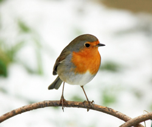
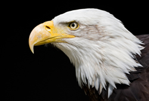

My name is Dave Jorgensen. I live in northern Utah and I enjoy bird watching. Every year I look forward to finding a nature calendar to put in my office. Because I work in the city, I enjoy being reminded about the beauty of the state of Utah. I was excited to find the calendar offered by Bart Jones. I recognize some of the bird varieties from my own back yard, but I was amazed to see the wide variety of birds he has captured with his camera in his Eureka neighborhood. The colors of the birds are so brilliantly captured that they look very real.
Thanks for brightening up my workplace,
David Jorgensen
Customer Relations,
America First Credit Union

Wow!!! Who would have thought all these birds live in Utah. I was attracted to the Birds of Utah calendar because of the great horned owl on the cover. I especially like finding and watching raptors such as: hawks, bald and golden eagles, vultures and owls. It is very rare to have some of these big raptors show up in your own yard. Bart Jones has inspired me to get out my 35mm camera and try to see what birds I can attract to my own backyard. I can't wait to see what he comes up with for next year's calendar.
A repeat customer,
Wendy Smith,
Salt Lake city

Every Christmas I am on the look out for a great calendar to give family members. My husband especially loves bird watching and so this wonderful Birds of Utah drew my attention. There are a wide variety of birds in this year's calendar. I loved the detail of the humming bird photo as well as the majesty of the bald eagle. It was interesting to also read the description for each of the birds as well as the techniques used by Bart Jones to entice these feathered friends into his back yard. When a successful present can be easily repeated, it makes gift giving a treat.
Thanks for sharing your talents with us,
Mary Matlin,
Manti

My family was visiting Utah from Florida this summer. I happened across the Bart Jones, Birds of Utah postcard book in the Salt Lake airport gift shop. I thought we had some exotic bird varieties in Florida, but they are nothing compared to the gorgeous variteies found in Utah. My son liked the really big birds like the owls and eagles. We even spotted the great blue herons when we drove out to Saltair. We sent these postcards to all of our friends.
Thanks for packaging these fun bird photos so we could share them.
Jeanette Findless,
Orlando, Florida